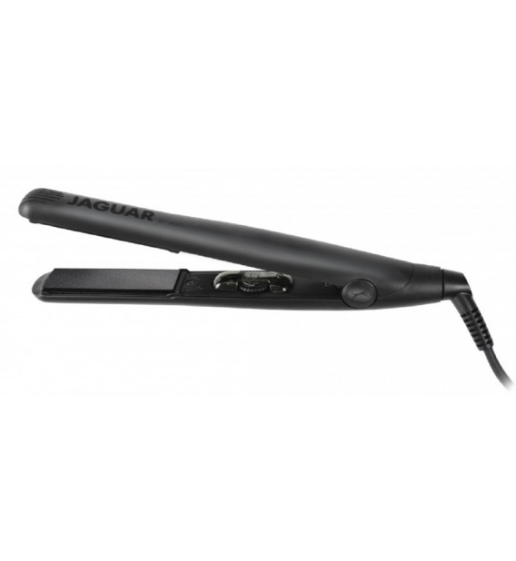

Plaukų tiesintuvai | Profesionalūs tiesintuvai - inHair - grožio profesionalams
 0 0 PirkiniųNo products
Tik profesionalams TotalCheck out
Mūsų parduotuvėsProduktas sėkmingai pridėtas į pirkinių krepšelį
Kiekis SumaKrepšelyje yra 0 prekių. Krepšelyje yra 1 prekė.
Prekės viso Pristatymas Nemokamas pristatymas ! Suma Tęsti apsipirkimą Apmokėti Esate kirpėjas - profesionalas? Registruokitės čia ir pirkite didmeninėmis kainomis Mūsų parduotuvės +370 670 02606 vilnius@inhair.lt Žygio g. 90, Vilnius 9:30 - 19:00 d.d. +370 683 79339 kaunas@inhair.lt Savanorių pr. 139, Kaunas 9:00 - 18:00 d.d. +370 684 77378 klaipeda@inhair.lt Naujojo sodo g. 1, Klaipėda 9:30 - 19:00 d.d. Profesionalams Prisijungti 0 0 PirkiniųPrekių nėra
Tik profesionalams SumaPirkti
Kategorijos Plaukų priežiūra Šampūnai Plaukų kondicionieriai Plaukų kaukės Puoselėjimo priemonės Plaukų purškikliai Koncentratai, ampulės Voniai Priedai plaukų priežiūrai L oreal Professionnel Kerastase Matrix Matrix Biolage Wella Professionals KEUNE Redken Joico Nioxin Wella SP REF. GHD Schwarzkopf Professional CHI Color Wow Davines Sebastian KC Professional Beard Junk by Waterclouds Waterclouds Plaukų dažai ir priedai Plaukų dažai Plaukų dažų oksidantai Plaukų balinimo milteliai Plaukų dažų išėmėjai Ilgalaikio šukavimo priemonės Priedai plaukų dažams L oreal Professionnel Matrix KEUNE Wella Professionals Joico Schwarzkopf Professional Wella SP Sebastian REF. Plaukų modeliavimas Plaukų putos Plaukų lakai Plaukų želė Plaukų kremai Plaukų purškikliai Plaukų losjonai Plaukų vaškai Priemonės nuo karščio L oreal Professionnel Matrix Matrix Biolage Davines Wella Professionals KEUNE Joico Wella SP REF. GHD CHI Sebastian Schwarzkopf Professional Waterclouds Redken Plaukų formavimo prietaisai Plaukų džiovintuvai Plaukų tiesintuvai Garbanojimo žnyplės GHD Elchim Šepečiai, priedai, dovanos Šepečiai, šukos Plaukų gumytės Plaukų segtukai Nagų lakavimo priemonės Kosmetinės priemonės veidui ir kūnui Dovanos GHD Dessata Elchim Olivia Garden Invisibobble LYXO Blax Wella Professionals KEUNE REF. Waterclouds Visi gamintojai American Crew Arganmer Arganmidas Bella Nova Bjork Briogeo CHI CHI Luxury CLEARR Crazy Kids Stuff Davines Dessata E+46 Elchim EVO hair GHD HH Simonsen HUXLEY Invisibobble Joico KC ir Four Reasons Kerastase KEUNE Kocostar L oreal Professionnel Matrix Matrix Biolage Milano Brush Missha NOOK Olaplex REVLON Schwarzkopf Professional Sebastian Professional St. Moriz T-LAB TAMMANU The Konjac Sponge Tonymoly Waterclouds Wella Professionals Zimpli Kids KOSMETIKA Akcijos Pradžia Plaukų formavimo prietaisai > Plaukų tiesintuvai
Loading...
Žymos:
tonymoly huxley šampūnas veido kaukė plaukų šampūnas dovana tonikas pleiskanos i am valantis šampūnas Peržiūrėti: Rūšiuoti pagal: Filtruoti Greita peržiūra Naujiena € 130,00HH Simonsen True Divinity plaukų tiesintuvas Pearl White
HH Simonsen True Divinity plaukų tiesintuvas - tai elegantiškas plaukų priežiūros pagalbininkas namuose ir salone.
Į krepšelį Greita peržiūra Naujiena € 130,00HH Simonsen True Divinity plaukų tiesintuvas Sparkling Rose
HH Simonsen True Divinity plaukų tiesintuvas - tai elegantiškas plaukų priežiūros pagalbininkas namuose ir salone.
Į krepšelį Greita peržiūra Naujiena € 130,00HH Simonsen True Divinity plaukų tiesintuvas Black Granite
HH Simonsen True Divinity plaukų tiesintuvas - tai elegantiškas plaukų priežiūros pagalbininkas namuose ir salone.
Į krepšelį Greita peržiūra € 130,00HH Simonsen True Divinity tiesintuvo rinkinys Sorbet Sky
HH Simonsen True Divinity plaukų žnyplės - tai elegantiškas plaukų stilizavimo įrankis.
Į krepšelį Greita peržiūra € 130,00HH Simonsen True Divinity tiesintuvo rinkinys Sorbet Blossom
HH Simonsen True Divinity plaukų žnyplės - tai elegantiškas plaukų stilizavimo įrankis.
Į krepšelį Greita peržiūra € 204,00HH Simonsen Nourishing plaukų tiesintuvas + keratino užpildas
1HH Simonsen Nourishing plaukų tiesintuvas su keratino talpa! Užpildykite plaukus keratinu tiesiog tiesinimo metu.
Į krepšelį Greita peržiūra € 39,00Bella Nova plaukų tiesinimo šepetys
Naujos kartos karštas šepetys tobulai tiesiems ir žvilgiems plaukams.
Į krepšelį Greita peržiūra € 167,00HH Simonsen Infinity PRO plaukų tiesintuvas
HH Simonsen Infinity PRO plaukų tiesintuvas - tai elegantiškas plaukų stilizavimo įrankis platesnėmis plokštelėmis.
Į krepšelį Greita peržiūra € 149,00HH Simonsen Infinity plaukų tiesintuvas
1HH Simonsen Infinity plaukų tiesintuvas - tai elegantiškas plaukų stilizavimo įrankis, kuris Jums leis ištiesinti bet kokio tipo plaukus.
Į krepšelį Greita peržiūra € 130,00HH Simonsen True Divinity tiesintuvas (juoda)
HH Simonsen True Divinity plaukų žnyplės - tai elegantiškas plaukų stilizavimo įrankis.
Į krepšelį Greita peržiūra € 199,00GHD Gold Dual Zone plaukų žnyplės, 1vnt.
Atnaujintas GHD Gold plaukų tiesintuvas - dar efektyviau ištiesinti ir blizgantys plaukai.
Į krepšelį Greita peržiūra € 265,00GHD Platinum® PLUS plaukų tiesinimo žnyplės
Inovatyvios atnaujintos GHD Platinum+ tiesinimo žnyplės naudoja saugų plaukams karštį, kurio dėka tiesinimo rezultatas - sveikesni, stipresni bei blizgesni plaukai.
Į krepšelįKompanija
Apie mus Straipsniai TaisyklėsParduotuvė
Apmokėjimas Pristatymas Privatumo politikaInformacija
Registracija profesionalams Kodėl naudinga registruotis profesionalui Mūsų parduotuvės Susisiekite su mumisKontaktinė informacija
Reikia konsultacijos dėl produktų?
+370 670 02606
Pagalba kilus nesklandumams užsakymo metu: +370 609 85671
info@inhair.lt© 2020 inHair.lt Visos teisės saugomos.
+370 670 02606 vilnius@inhair.lt Žygio g. 90, Vilnius 9:30 - 19:00 d.d. +370 683 79339 kaunas@inhair.lt Savanorių pr. 139, Kaunas 9:00 - 18:00 d.d. 10:00-15:00 šešt. +370 684 77378 klaipeda@inhair.lt Naujojo sodo g. 1, Klaipėda 9:30 - 19:00 d.d. 10:00-15:00 šešt. Atgal Plaukų priežiūra Meniu Šampūnai Plaukų kondicionieriai Plaukų kaukės Puoselėjimo priemonės Plaukų purškikliai Koncentratai, ampulės Voniai Priedai plaukų priežiūrai Plaukų dažai ir priedai Meniu Plaukų dažai Plaukų dažų oksidantai Plaukų balinimo milteliai Plaukų dažų išėmėjai Ilgalaikio šukavimo priemonės Priedai plaukų dažams Plaukų modeliavimas Meniu Plaukų putos Plaukų lakai Plaukų želė Plaukų kremai Plaukų purškikliai Plaukų losjonai Plaukų vaškai Priemonės nuo karščio Plaukų formavimo prietaisai Meniu Plaukų džiovintuvai Plaukų tiesintuvai Garbanojimo žnyplės Šepečiai, priedai, dovanos Meniu Šepečiai, šukos Plaukų gumytės Plaukų segtukai Nagų lakavimo priemonės Kosmetinės priemonės veidui ir kūnui Dovanos Visi gamintojai Meniu American Crew Arganmer Arganmidas Bella Nova Bjork Briogeo CHI CHI Luxury CLEARR Crazy Kids Stuff Davines Dessata E+46 Elchim EVO hair GHD HH Simonsen HUXLEY Invisibobble Joico KC ir Four Reasons Kerastase KEUNE Kocostar L oreal Professionnel Matrix Matrix Biolage Milano Brush Missha NOOK Olaplex REVLON Schwarzkopf Professional Sebastian Professional St. Moriz T-LAB TAMMANU The Konjac Sponge Tonymoly Waterclouds Wella Professionals Zimpli Kids KOSMETIKA Akcijos Prisijungti Profesionalams